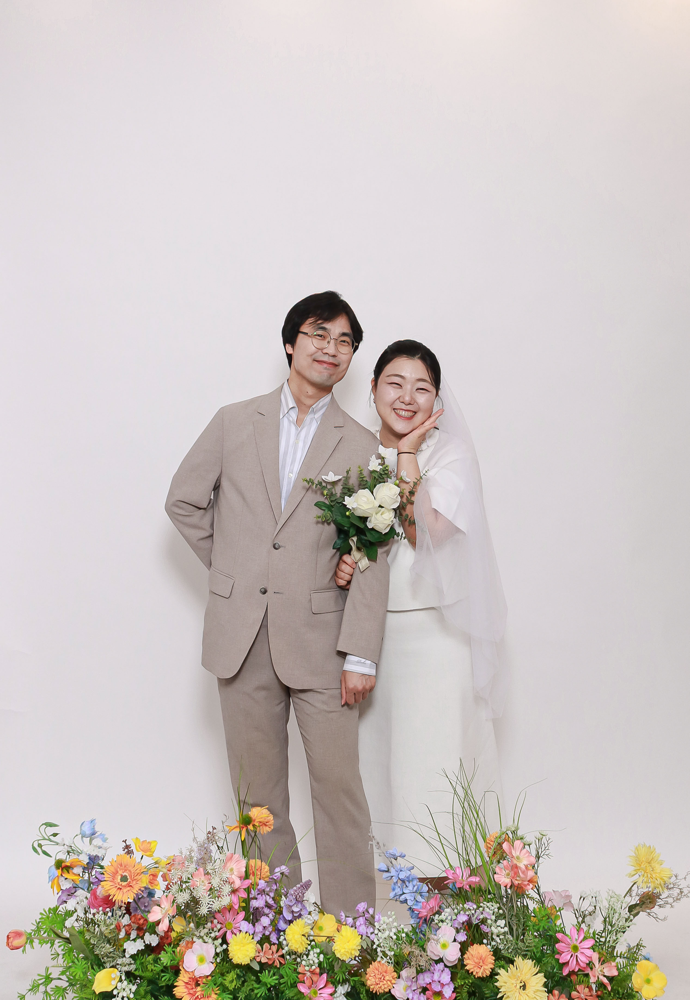

GALLERY



LOCATION
자가용 안내
예식장 내 주차장 무료 이용 가능 (2시간)
오시는 길 상세 안내
숙소 안내 (11월 7일)
결혼식 전날, 하객분들이 편히 머무실 숙소입니다.
청주 메리제인 호텔
충북 청주시 흥덕구 짐대로72번길 13
청남대 입구 → 예식 장소 (11월 8일)

1. 청남대 매표소를 통과하신 후, 이정표를 따라 '호수광장(골프장)' 방향으로 계속 직진합니다.

2. '호수광장(골프장)' 주차장에 주차하시면 안내요원이 예식 장소까지 안내해 드릴 예정입니다.